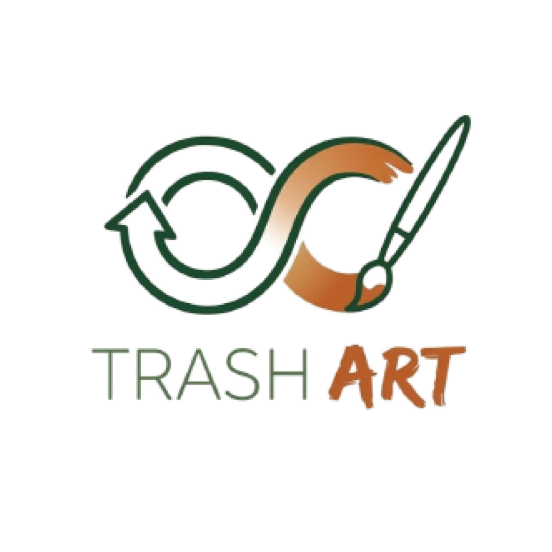

Қоқысты өнерге айналдырып, табыс табу
Экология мен шығармашылыққа қызығып, мастер-класстарға қатысады.
Тұрақты тәжірибелерді дамытып, материалдар мен шабыт табады.
Отбасылық мастер-класстарға қатысып, апсайклинг мәдениетін меңгереді.
Эко-сыйлықтар мен брендтелген сувенирлерге тапсырыс береді.
Пластик, қағаз, шыны, мата — бәрі қолданылады.
Материалдарды өнім жасауға дайындау.
Қолмен жасалған дизайнерлік бұйымдар: брелоктар, декор, сувенирлер.
Барлық жасқа арналған апсайклинг бойынша оқыту.
Онлайн платформалар, эко-жәрмеңкелер, корпоративтік тапсырыстар.
Экологиялық мәдениетті қалыптастыру, маркетинг, блогерлермен жұмыс.
Апсайклингке үйрету, жастар мен отбасыларды тарту, жұмыс орындарын құру.
Қалдықтарды азайту, қайта өңдеуді арттыру, экологиялық әсерді төмендету.
Шағын өндіріс, 3 табыс көзі, өзін-өзі ақтау, масштабтау (франшиза).